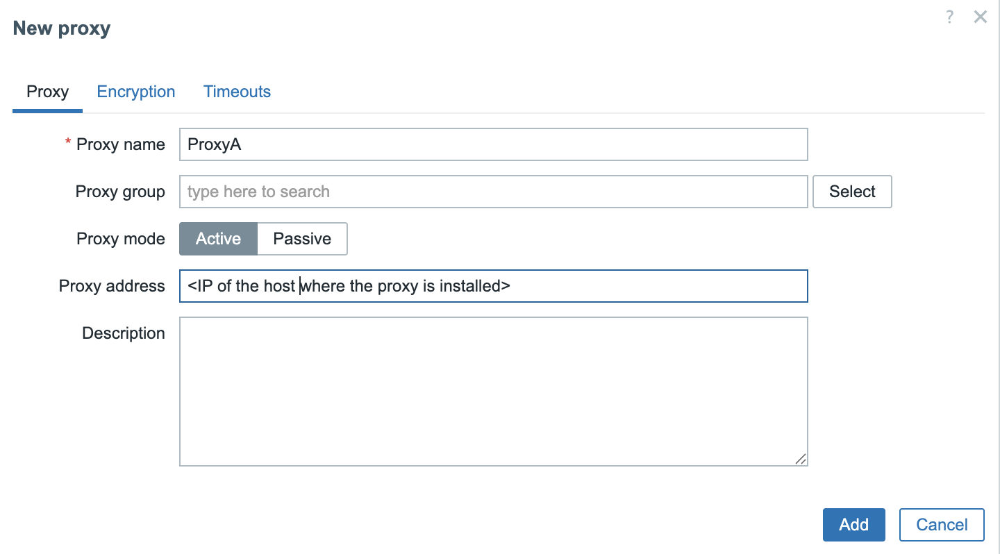

Running Proxies as containers
As discussed in the previous section, Zabbix proxies offer a lightweight and efficient solution for distributed monitoring. Leveraging SQLite as their backend database, they are inherently flexible and portable, making them well-suited for deployment in containerized environments. This chapter provides a step-by-step guide on deploying a Zabbix proxy within a container, outlining configuration options and best practices for optimal performance and maintainability.
Setting up containers
For this setup, you will need a virtual machine (VM) with Podman installed to deploy the Zabbix proxy container. This container will then be configured to communicate with your Zabbix server.
Refer to the Preparing the system for Zabbix chapter for instructions on preparing your system for running containers using Podman.
Add the proxy to the zabbix frontend

3.9 Add proxy to frontend
To keep the configuration straightforward, we will deploy an active Zabbix proxy. In this case, only two parameters need to be configured: the proxy's hostname (as defined in the Zabbix frontend) and the proxy’s IP address for communication with the Zabbix server.
Prepare the Proxy config
The next step is to create a .container unit file for our Quadlet setup. This
file should be placed in the directory ~/.config/containers/systemd/. For
example, we will create a file named zabbix-proxy-sqlite.container, which will
define the configuration for running the Zabbix proxy container under SystemD
using Podman.
Ensure you are logged in as user podman.
Creation of a .container systemd unit file
The container image for the Zabbix proxy using SQLite can be sourced from Docker Hub. Specifically, we will use the image tagged 7.0-centos-latest, which is maintained by the official Zabbix project. This image can be found at:
https://hub.docker.com/r/zabbix/zabbix-proxy-sqlite3/tags?name=centos
A complete list of available image tags, including different versions and operating system bases, is available on the image’s main page:
https://hub.docker.com/r/zabbix/zabbix-proxy-sqlite3
For our purposes, the 7.0-centos-latest tag provides a CentOS-based container image that is well-suited for LTS environments, and it includes all necessary components to run the Zabbix proxy with SQLite.
In addition to the .container unit file, we also need to create an environment
file that defines the configuration variables for the container. This file must
reside in the same directory as the .container file:
~/.config/containers/systemd/ and should be named ZabbixProxy.env, as
referenced in our .container configuration.
This environment file allows us to override default container settings by specifying environment variables used during container runtime. The list of supported variables and their functions is clearly documented on the container's Docker Hub page:
https://hub.docker.com/r/zabbix/zabbix-proxy-sqlite3
These variables allow you to configure key parameters such as the proxy mode, server address, hostname, database settings, and logging options, providing a flexible and declarative way to tailor the proxy’s behavior to your environment.
Let's create the file ~/.config/containers/systemd/ZabbixProxy.env and add the
following content.
~/.config/containers/systemd/ZabbixProxy.env
With our configuration now complete, the final step is to reload the systemd user daemon so it recognizes the new Quadlet unit. This can be done using the following command:
If everything is set up correctly, systemd will automatically generate a service
unit for the container based on the .container file. You can verify that the
unit has been registered by checking the output of systemctl --user
list-unit-files:
Verify if the new unit is registered correctly
You can now start the container using the systemctl --user start command. To
start the container, use the following command (replacing the service name if
you used a different one):
This command may take a few minutes as it wil download the required Zabbix Proxy container from the docker registry.
To verify that the container started correctly, you can inspect the running containers with:
Inspect running containers
Take note of the CONTAINER ID—in this example, it is b5716f8f379d. You can
then retrieve the container's logs using:
Retrieve container logs
Whereb5716f8f379d is the CONTAINER ID of your container
On some distributions, you can also view the logs directly through SystemD:
This command will return the startup and runtime logs for the container, which are helpful for troubleshooting and verifying that the Zabbix proxy has started correctly.
Upgrading our containers
At some point, you may be asking yourself: How do I upgrade my Zabbix containers? Fortunately, container upgrades are a straightforward process that can be handled either manually or through automation, depending on your deployment strategy.
Throughout this book, we've been using the image tag 7.0-centos-latest, which
always pulls the most up-to-date CentOS-based Zabbix 7.0 image available at the
time. This approach ensures you are running the latest fixes and improvements
without specifying an exact version.
Alternatively, you can opt for version specific tags such as centos-7.0.13,
which allow you to maintain strict control over the version deployed. This can
be helpful in environments where consistency and reproducibility are critical.
In the following sections, we will explore both approaches: using the latest
tag for automated updates and specifying fixed versions for controlled
environments.
Upgrading manually
If you're running your Zabbix container using a floating tag such as
:latest or :trunk-centos, upgrading is a simple and efficient process. These
tags always point to the most recent image available in the repository.
To upgrade:
Thanks to our Quadlet integration, systemd will handle the rest automatically:
The currently running container will be stopped. A new container instance will
be started using the freshly pulled image. All configuration options defined in
the associated .container file will be reapplied. This approach allows for
quick updates with minimal effort, while still preserving consistent
configuration management through systemd.
Upgrading When Using a Fixed Image Tag
If your container is configured to use a fixed image tag (e.g.,
7.0.13-centos) rather than a floating tag like :latest or :trunk, the
upgrade process involves one additional step: manually updating the tag in
your .container file.
For example, if you're running a user-level Quadlet container and your
configuration file is located at
~/.config/containers/systemd/zabbix-proxy-sqlite.container:
Manually updating the tag
You'll need to edit this file
and update the Image= line. For instance, change:
to:
Once the file has been updated, apply the changes by running:
This tells systemd to reload the modified unit file and restart the container with the updated image. Since you're using a fixed tag, this upgrade process gives you full control over when and how new versions are introduced.
Upgrading automatically
When using floating tags like :latest or :trunk-centos for your Zabbix
container images, Podman Quadlet supports automated upgrades by combining them
with the AutoUpdate=registry directive in your .container file.
This setup ensures your container is automatically refreshed whenever a new image is available in the remote registry without requiring manual intervention.
Example Configuration
.container file
In this example, the Image points to the trunk-centos tag, and AutoUpdate=registry
tells Podman to periodically check the container registry for updates to this tag.
How the Auto-Update Process Works
Once configured, the following steps are handled automatically:
-
Image Check The systemd service
podman-auto-updateis triggered by a timer (usually daily). It compares the current image digest with the remote image's digest for the same tag. -
Image Update If a new version is detected:
- The updated image is pulled from the registry.
- The currently running container is stopped and removed.
- A new container is created from the updated image.
- Configuration Reuse The new container is launched using the exact same
configuration defined in your
.containerfile, including environment variables, volume mounts, ports, and networking.
This approach provides a clean, repeatable way to keep your Zabbix proxy (or other components) current without direct user intervention.
Enabling the Auto-Update Timer
To ensure that updates are applied regularly, you must enable the Podman auto-update timer.
This activates a systemd timer that periodically invokes
podman-auto-update.service.
When to Use This Approach
AutoUpdate=registry is particularly useful in the following scenarios:
- Development or staging environments, where running the latest version is beneficial.
- Non-critical Zabbix components, such as test proxies or lab deployments.
- When you prefer a hands-off update strategy, and image stability is trusted.
Warning
This setup is not recommended for production environments without a proper rollback
plan. Floating tags like :latest or :trunk-centos can introduce breaking
changes unexpectedly. For production use, fixed version tags (e.g. 7.0.13-centos)
are generaly recommended since they offer greater stability and control.
Conclusion
In this chapter, we deployed a Zabbix active proxy using Podman and SystemD
Quadlets. We configured SELinux, enabled user lingering, and created both
.container and .env files to define proxy behavior. Using Podman in rootless
mode ensures improved security and system integration. SystemD management makes
the container easy to control and monitor. This setup offers a lightweight,
flexible, and secure approach to deploying Zabbix proxies. It is ideal for
modern environments, especially when using containers or virtualisation. With
the proxy running, you're ready to extend Zabbix monitoring to remote locations
efficiently.
Questions
- What are the main advantages of using Podman over Docker for running containers on Red Hat-based systems?
- Why is the
loginctl enable-lingercommand important when using SystemD with rootless Podman containers? - What is the purpose of the
.envfile in the context of a Quadlet-managed container? - How do SELinux policies affect Podman container execution, and how can you configure them correctly?
- How can you verify that your Zabbix proxy container started successfully?
- What is the difference between an active and passive Zabbix proxy?